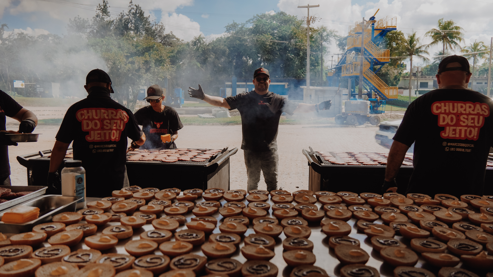
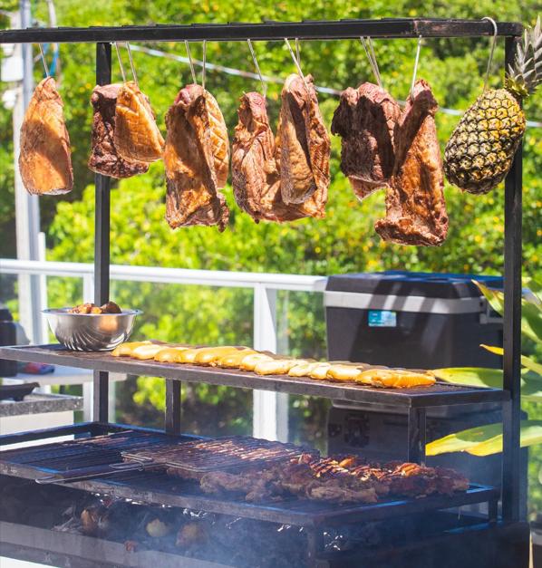
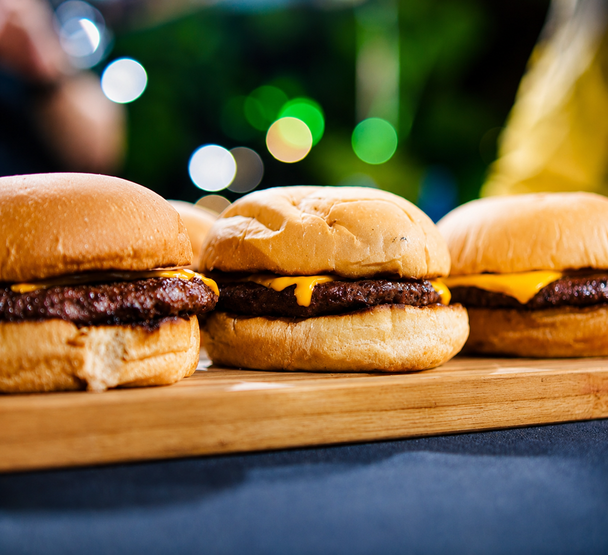
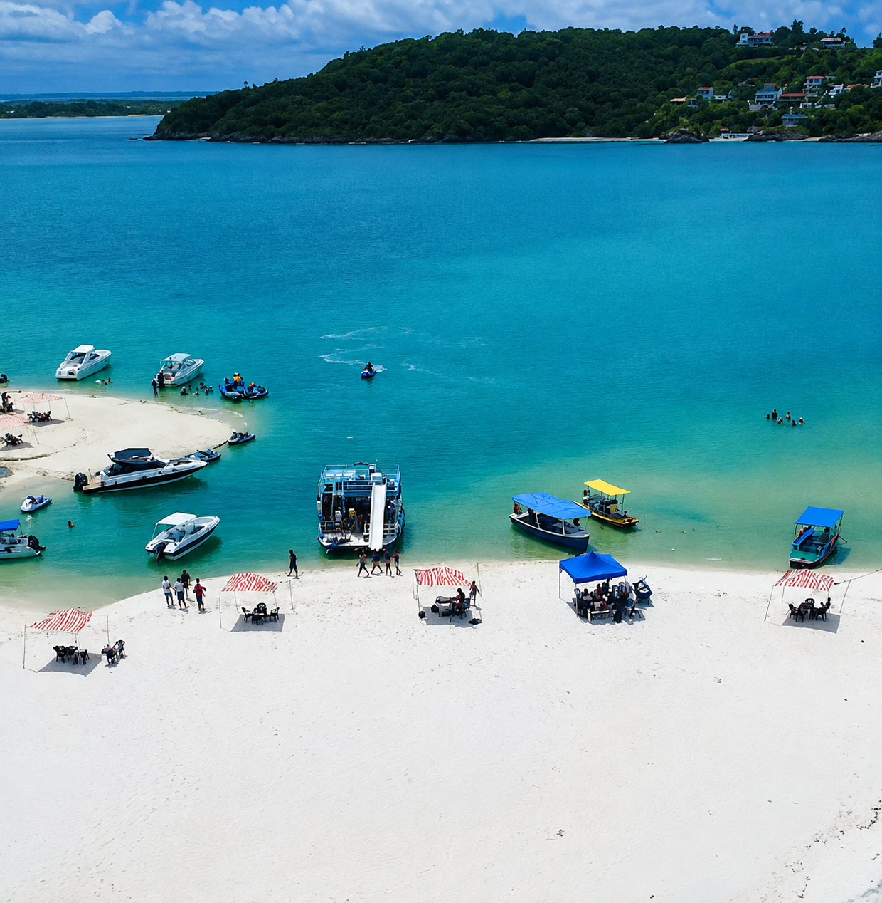
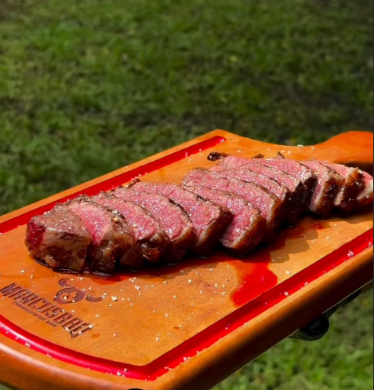
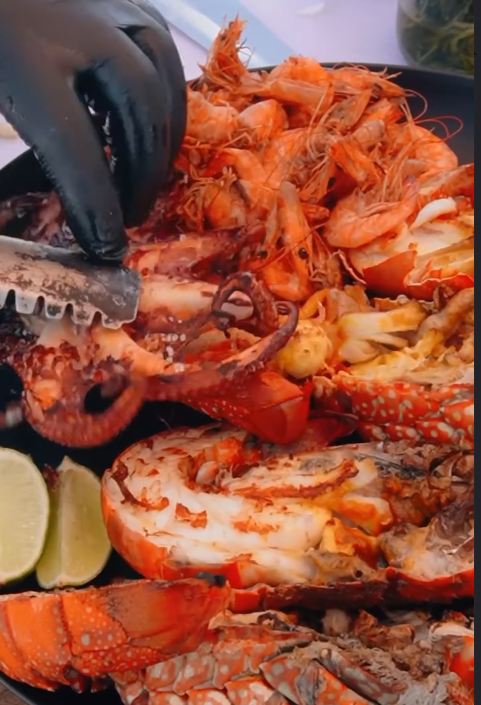
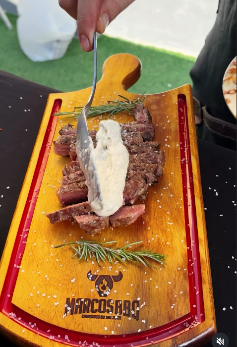
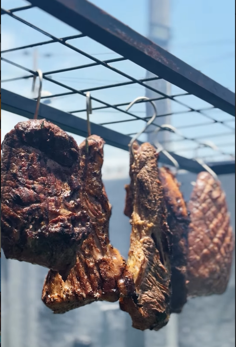
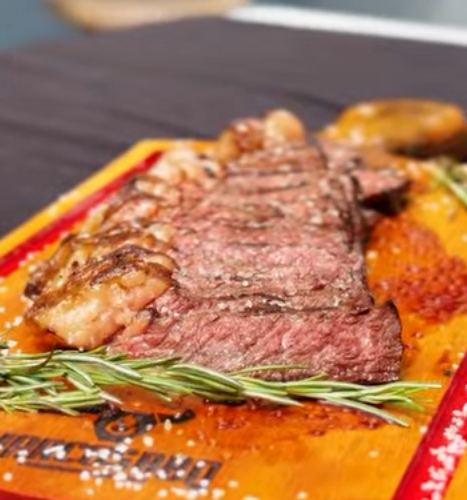
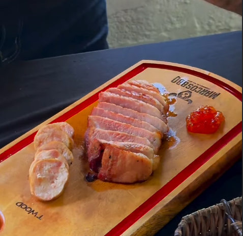

Especialista em levar o sabor perfeito para o seu evento.

A MARCOSBBQ nasceu da paixão pelo verdadeiro churrasco brasileiro. Há mais de 2 anos, transformamos eventos em experiências inesquecíveis, levando para Recife e região um buffet de churrasco preparado com cortes selecionados, ingredientes de qualidade e o autêntico sabor do fogo.
Do preparo à mesa, cuidamos de cada detalhe para oferecer um churrasco suculento, saboroso e preparado na hora, com aquele toque caseiro que faz toda a diferença. Seja em festas, confraternizações, aniversários ou eventos especiais, a MARCOSBBQ leva sabor, qualidade e uma experiência que seus convidados vão lembrar.
Três experiências inesquecíveis para você e seus convidados

Nosso buffet de churrasco é preparado na autêntica parrilha, com cortes selecionados e especiais com todo o cuidado de quem entende de churrasco. Todas proteinas preparadas na brasa e servidos no ponto certo, diretamente à mesa dos seus convidados.

Hambúrgueres artesanais feitos com carne de qualidade, pão brioche fresquinho e ingredientes de qualidade. Perfeito para eventos descontraídos, festas, casamentos, confraternização.

Uma experiência única: passeio de barco saindo de Ponta da Pedra-PE até a coroa da baleia, com buffet de frutos do mar servido na praia. Peixes frescos, camarões, lagostas, e o melhor da culinária litorânea num cenário de tirar o fôlego.
Um pouco do que você vai viver com a MARCOSBBQ






Pronto para viver a experiência MARCOSBBQ? Entre em contato e reserve já.